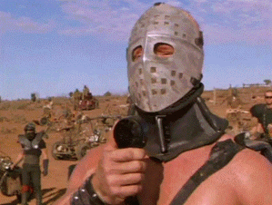

I’m hosted with GitHub Pages.
Nico is a composer from milan, Italy.
Piano Bio
Matt the Max is a singer from the hills of the Mid-Atlantic. Originally trained in the classics of R&B/Hip-Hop, he enjoys the both singing & rapping. He joined M.A.N.S. after their initial lead singer dropped out to go on American Idol. Prior to M.A.N.S., he was an accountant with PWC. He's the oldest member of M.A.N.S. and hopes to tour with the group into a rich retirement.
Stevie D. Earp is a Berklee-recognized bassist who is currently studying what a bass is. He has played with many important and innovative bands, such as Rhythm Section Ensemble Rating 1, Mixed Styles Rating 2, and Mixed Styles Rating 3. Among his other accomplishments are putting on pants backwards 3 days in a row without meaning to, and passing out from malnutrition and dehydration twice in a single semester. His biting wit and roguish charm are essential ingredients to the sound of MANS, and he is without a doubt the most important bassist in the band.